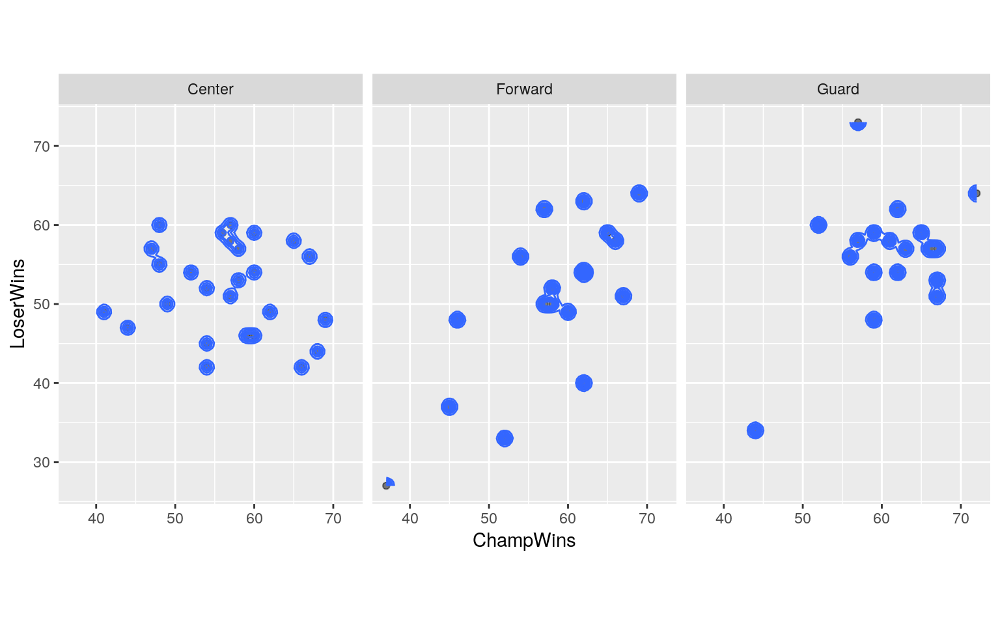
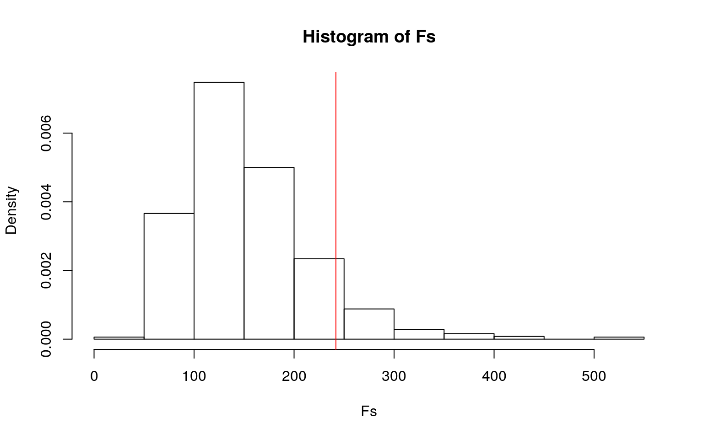
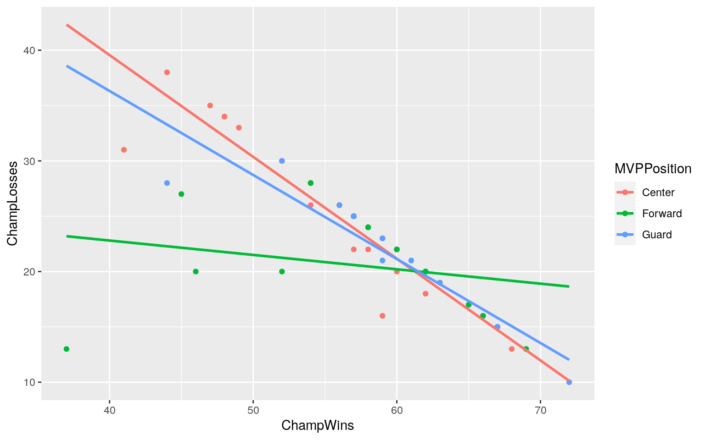
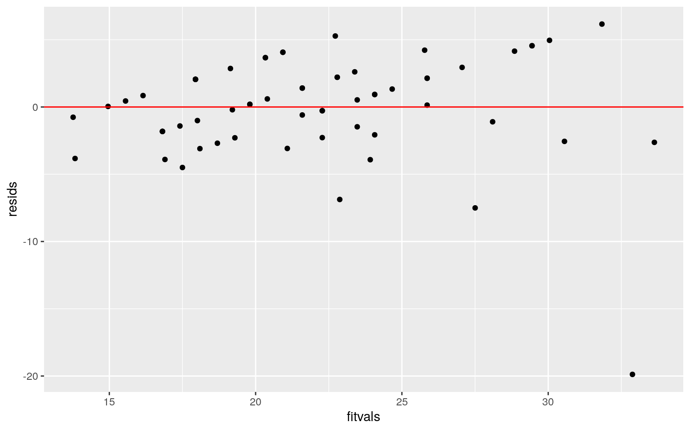
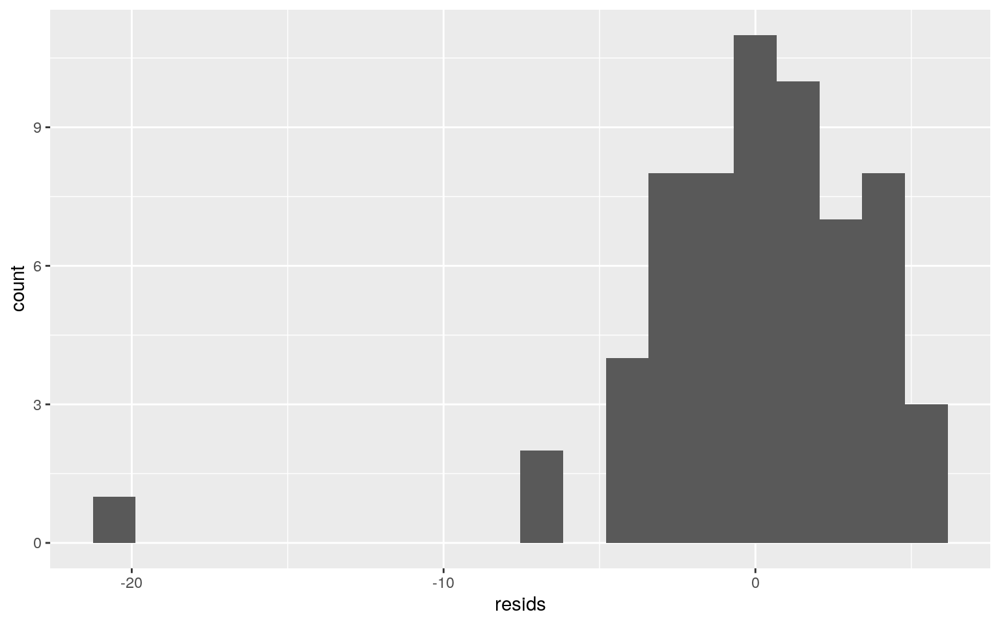
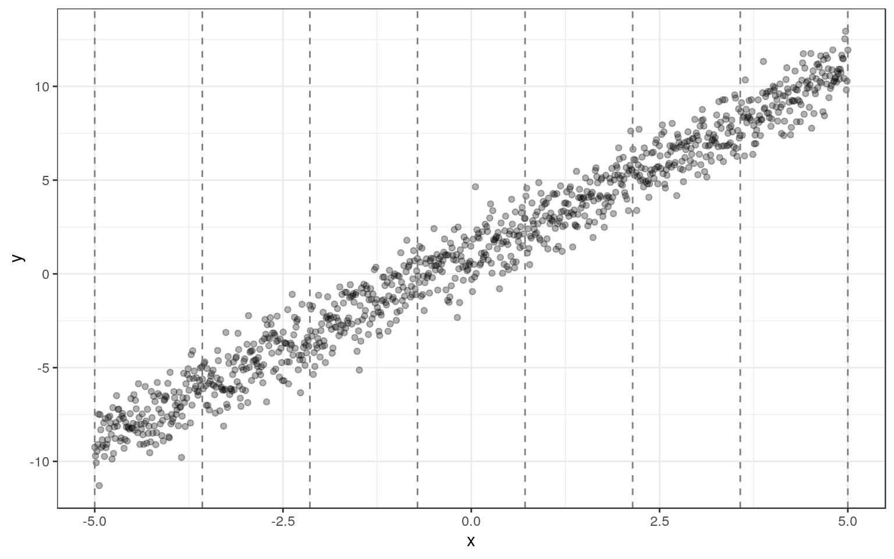
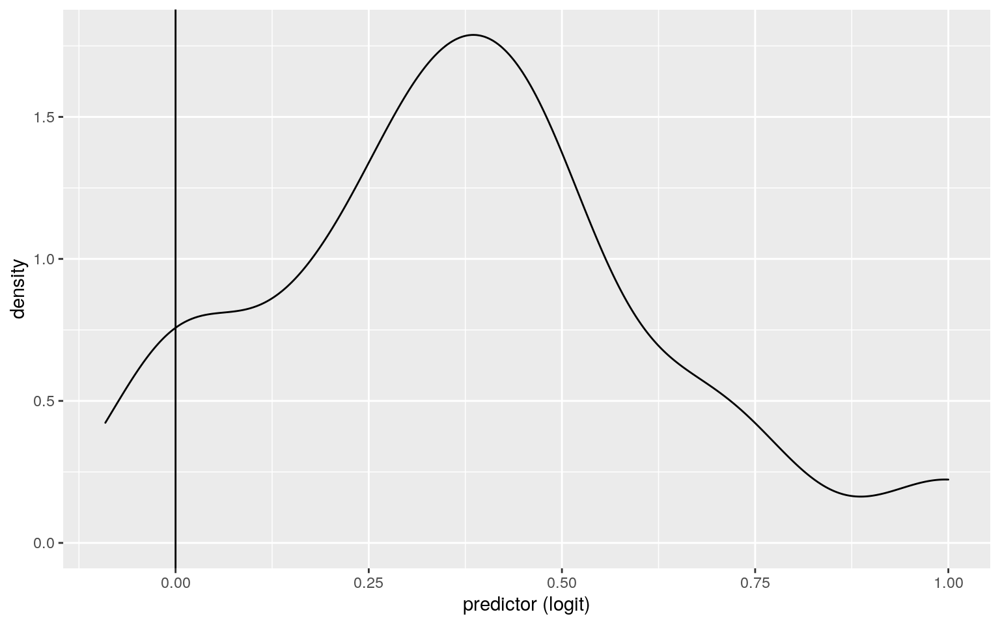
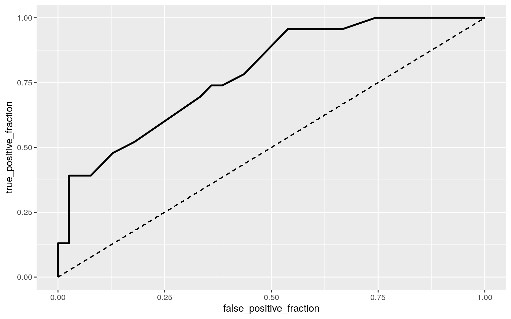
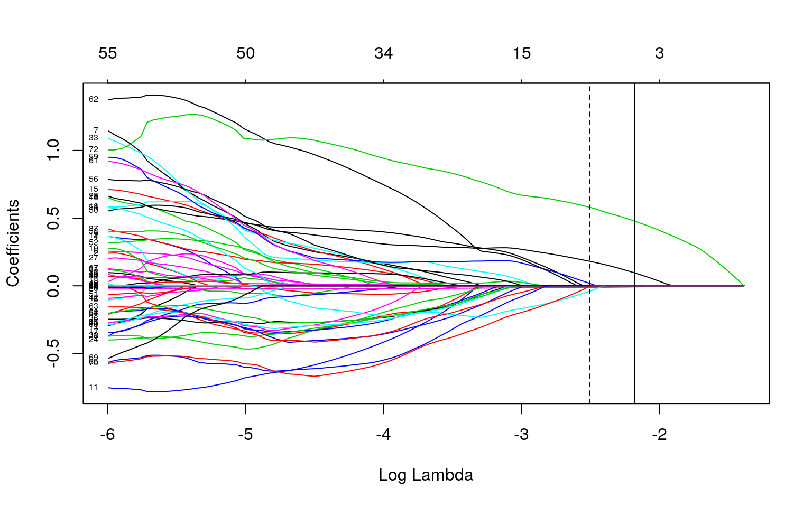

This is an R Markdown document. Markdown is a simple formatting syntax for authoring HTML, PDF, and MS Word documents. For more details on using R Markdown see http://rmarkdown.rstudio.com.
When you click the Knit button a document will be generated that includes both content as well as the output of any embedded R code chunks within the document. You can embed an R code chunk like this:
The dataset talks about NBA champions and the finals matchups. The variable, year, explains what year every finals match up took place. The variable, NBA Champion, tells who the winner of the NBA finals was that year. The variable, Champ-wins, tells how many regular season wins the winner of the NBA finals had. The variable, Champ-losses, tells how many regular season losses the winner of the NBA finals had. The variable, loser, tells who the lost the NBA finals that year. The variable, loser-wins, tells how many regular season wins the loser of the NBA final had. The variable, loser-losses, tells how many regular season losses the loser of the NBA finals had. The variable, MVP position, tells what position the player that won MVP was. The variable, MVP team, tells what team the MVP of that season was on. There are 62 observations of each variable.
library(mvtnorm)
NBAfinalawards2 <- read_excel("NBAfinalawards2.xlsx")
# Ho: For both Champion wins and Champion losses, means for each MVP Team are equal.
# Ha: For at least one variable, at least one MVP Team mean is different.
man1 <- manova(cbind(ChampWins,ChampLosses)~MVPPosition, data = NBAfinalawards2)
summary(man1)## Df Pillai approx F num Df den Df Pr(>F)
## MVPPosition 2 0.15806 2.5314 4 118 0.04401 *
## Residuals 59
## ---
## Signif. codes: 0 '***' 0.001 '**' 0.01 '*' 0.05 '.' 0.1 ' ' 1summary.aov(man1)## Response ChampWins :
## Df Sum Sq Mean Sq F value Pr(>F)
## MVPPosition 2 200.4 100.198 1.8075 0.173
## Residuals 59 3270.6 55.433
##
## Response ChampLosses :
## Df Sum Sq Mean Sq F value Pr(>F)
## MVPPosition 2 223.33 111.663 3.1389 0.05065 .
## Residuals 59 2098.88 35.574
## ---
## Signif. codes: 0 '***' 0.001 '**' 0.01 '*' 0.05 '.' 0.1 ' ' 1NBAfinalawards2 %>% group_by(MVPPosition) %>% summarize(mean(ChampWins), mean(ChampLosses))## # A tibble: 3 x 3
## MVPPosition `mean(ChampWins)` `mean(ChampLosses)`
## <chr> <dbl> <dbl>
## 1 Center 56.5 24.3
## 2 Forward 57.7 20.5
## 3 Guard 60.8 20.5pairwise.t.test(NBAfinalawards2$ChampLosses,NBAfinalawards2$MVPPosition,
p.adj="none")##
## Pairwise comparisons using t tests with pooled SD
##
## data: NBAfinalawards2$ChampLosses and NBAfinalawards2$MVPPosition
##
## Center Forward
## Forward 0.04 -
## Guard 0.04 1.00
##
## P value adjustment method: noneggplot(NBAfinalawards2, aes(x = ChampWins, y = LoserWins)) + geom_point(alpha = .5) + geom_density_2d(h=2) + coord_fixed() + facet_wrap(~MVPPosition) The overall MANOVA is significant which means that the mean Champion wins and mean Champion losses for each MVP position is not equal. After running the one way Anova for each variable, the ChampWins variable is not signficant and the ChampLosses variable is significant. Univariate ANOVAs for each dependent variable were conducted as follow-up tests to the MANOVA, using the Bonferroni method for controlling Type I error rates for multiple comparisons. The univariate ANOVAs for ChampLosses was statistically significant. Post Hoc analysis was performed and significant difference was found betweent the center and forward and then the center and guard. 6 Tests were performed so .05/6 = .008. Significant even after adjusting for multiple comparisions as bonferroni alpha = .008. Probability of Type I error is .265. (1-.95^6). Multivariate normality was met.
library(vegan)
dists <- NBAfinalawards2%>%select(ChampWins,ChampLosses)
adonis(dists ~ NBAChampion, data=NBAfinalawards2)##
## Call:
## adonis(formula = dists ~ NBAChampion, data = NBAfinalawards2)
##
## Permutation: free
## Number of permutations: 999
##
## Terms added sequentially (first to last)
##
## Df SumsOfSqs MeanSqs F.Model R2 Pr(>F)
## NBAChampion 17 0.18743 0.0110253 1.942 0.42868 0.031 *
## Residuals 44 0.24980 0.0056773 0.57132
## Total 61 0.43723 1.00000
## ---
## Signif. codes: 0 '***' 0.001 '**' 0.01 '*' 0.05 '.' 0.1 ' ' 1SST<- sum(dists^2)/150
SSW<-NBAfinalawards2%>%group_by(NBAChampion)%>%select(ChampWins,ChampLosses)%>%
do(d=dist(.[2:3],"euclidean"))%>%ungroup()%>%summarize(sum(d[[1]]^2)/50 + sum(d[[2]]^2)/50+sum(d[[3]]^2)/50)%>%pull
F_obs<-((SST-SSW)/2)/(SSW/147)
Fs<-replicate(1000,{new<-NBAfinalawards2%>%mutate(NBAChampion=sample(NBAChampion)) #permute the species vector
SSW<-new%>%group_by(NBAChampion)%>%select(ChampWins,ChampLosses)%>%
do(d=dist(.[2:3],"euclidean"))%>%ungroup()%>%
summarize(sum(d[[1]]^2)/50 + sum(d[[2]]^2)/50+ sum(d[[3]]^2)/50)%>%pull
((SST-SSW)/2)/(SSW/147) #calculate new F on randomized data
})
{hist(Fs,prob = T); abline(v=F_obs, col="red", add=T)}
mean(Fs>F_obs)## [1] 0.085Ho: For both Champion wins and Champion losses, means for each MVP Team are equal. Ha: For at least one variable, at least one MVP Team mean is different. The p value is greater than .05 so the null is not rejected. The means of each MVP team are equal. The F statistic is 241.84.
#Ho: Controlling for Champwins, LoserWins does not explain variation in NBAChamp.
#Ha: Controlling for LoserWins, Champwins does not explain variation in NBAChamp.
fit<-lm(ChampLosses~MVPPosition+ChampWins, data=NBAfinalawards2)
summary(fit)##
## Call:
## lm(formula = ChampLosses ~ MVPPosition + ChampWins, data = NBAfinalawards2)
##
## Residuals:
## Min 1Q Median 3Q Max
## -19.8795 -1.8160 0.3211 2.1918 6.1633
##
## Coefficients:
## Estimate Std. Error t value Pr(>|t|)
## (Intercept) 58.12234 4.03949 14.389 < 2e-16 ***
## MVPPositionForward -3.13897 1.23170 -2.548 0.0135 *
## MVPPositionGuard -1.28039 1.26522 -1.012 0.3157
## ChampWins -0.59740 0.07008 -8.524 8.14e-12 ***
## ---
## Signif. codes: 0 '***' 0.001 '**' 0.01 '*' 0.05 '.' 0.1 ' ' 1
##
## Residual standard error: 4.008 on 58 degrees of freedom
## Multiple R-squared: 0.5988, Adjusted R-squared: 0.5781
## F-statistic: 28.86 on 3 and 58 DF, p-value: 1.513e-11mean(NBAfinalawards2$ChampWins)## [1] 58.12903data.frame(NBAfinalawards2$ChampWins)## NBAfinalawards2.ChampWins
## 1 45
## 2 44
## 3 41
## 4 52
## 5 59
## 6 57
## 7 60
## 8 58
## 9 59
## 10 62
## 11 54
## 12 68
## 13 54
## 14 48
## 15 60
## 16 66
## 17 69
## 18 57
## 19 56
## 20 48
## 21 54
## 22 49
## 23 44
## 24 52
## 25 60
## 26 62
## 27 57
## 28 65
## 29 62
## 30 62
## 31 67
## 32 65
## 33 62
## 34 63
## 35 59
## 36 61
## 37 67
## 38 57
## 39 58
## 40 47
## 41 72
## 42 69
## 43 62
## 44 37
## 45 67
## 46 56
## 47 58
## 48 60
## 49 54
## 50 59
## 51 52
## 52 58
## 53 66
## 54 65
## 55 57
## 56 57
## 57 46
## 58 66
## 59 62
## 60 67
## 61 57
## 62 67data.frame(ChampLosses_C=NBAfinalawards2$ChampWins-mean(NBAfinalawards2$ChampWins))## ChampLosses_C
## 1 -13.1290323
## 2 -14.1290323
## 3 -17.1290323
## 4 -6.1290323
## 5 0.8709677
## 6 -1.1290323
## 7 1.8709677
## 8 -0.1290323
## 9 0.8709677
## 10 3.8709677
## 11 -4.1290323
## 12 9.8709677
## 13 -4.1290323
## 14 -10.1290323
## 15 1.8709677
## 16 7.8709677
## 17 10.8709677
## 18 -1.1290323
## 19 -2.1290323
## 20 -10.1290323
## 21 -4.1290323
## 22 -9.1290323
## 23 -14.1290323
## 24 -6.1290323
## 25 1.8709677
## 26 3.8709677
## 27 -1.1290323
## 28 6.8709677
## 29 3.8709677
## 30 3.8709677
## 31 8.8709677
## 32 6.8709677
## 33 3.8709677
## 34 4.8709677
## 35 0.8709677
## 36 2.8709677
## 37 8.8709677
## 38 -1.1290323
## 39 -0.1290323
## 40 -11.1290323
## 41 13.8709677
## 42 10.8709677
## 43 3.8709677
## 44 -21.1290323
## 45 8.8709677
## 46 -2.1290323
## 47 -0.1290323
## 48 1.8709677
## 49 -4.1290323
## 50 0.8709677
## 51 -6.1290323
## 52 -0.1290323
## 53 7.8709677
## 54 6.8709677
## 55 -1.1290323
## 56 -1.1290323
## 57 -12.1290323
## 58 7.8709677
## 59 3.8709677
## 60 8.8709677
## 61 -1.1290323
## 62 8.8709677NBAfinalawards2$ChampWins_C <- NBAfinalawards2$ChampWins-mean(NBAfinalawards2$ChampWins)
fit1<-lm(ChampLosses~MVPPosition+ChampWins_C, data=NBAfinalawards2)
summary(fit1)##
## Call:
## lm(formula = ChampLosses ~ MVPPosition + ChampWins_C, data = NBAfinalawards2)
##
## Residuals:
## Min 1Q Median 3Q Max
## -19.8795 -1.8160 0.3211 2.1918 6.1633
##
## Coefficients:
## Estimate Std. Error t value Pr(>|t|)
## (Intercept) 23.39594 0.79387 29.471 < 2e-16 ***
## MVPPositionForward -3.13897 1.23170 -2.548 0.0135 *
## MVPPositionGuard -1.28039 1.26522 -1.012 0.3157
## ChampWins_C -0.59740 0.07008 -8.524 8.14e-12 ***
## ---
## Signif. codes: 0 '***' 0.001 '**' 0.01 '*' 0.05 '.' 0.1 ' ' 1
##
## Residual standard error: 4.008 on 58 degrees of freedom
## Multiple R-squared: 0.5988, Adjusted R-squared: 0.5781
## F-statistic: 28.86 on 3 and 58 DF, p-value: 1.513e-11qplot(x = ChampWins, y = ChampLosses, color = MVPPosition, data = NBAfinalawards2) +
stat_smooth(method = "lm", se = FALSE, fullrange = TRUE)
resids<-fit$residuals; fitvals<-fit$fitted.values
ggplot()+geom_point(aes(fitvals,resids))+geom_hline(yintercept=0, col="red")
ggplot()+geom_histogram(aes(resids),bins=20)
library(sandwich)
library(lmtest)
fit<-lm(ChampLosses~MVPPosition*ChampWins, data=NBAfinalawards2)
bptest(fit)##
## studentized Breusch-Pagan test
##
## data: fit
## BP = 23.008, df = 5, p-value = 0.0003363summary(fit)$coef[,1:2]## Estimate Std. Error
## (Intercept) 76.3491894 4.6575345
## MVPPositionForward -48.3525518 6.9102240
## MVPPositionGuard -9.6601294 8.3337550
## ChampWins -0.9197816 0.0817092
## MVPPositionForward:ChampWins 0.7899072 0.1197719
## MVPPositionGuard:ChampWins 0.1605094 0.1394446coeftest(fit, vcov= vcovHC(fit))[,1:2]## Estimate Std. Error
## (Intercept) 76.3491894 7.0071154
## MVPPositionForward -48.3525518 20.8270541
## MVPPositionGuard -9.6601294 16.4440249
## ChampWins -0.9197816 0.1171152
## MVPPositionForward:ChampWins 0.7899072 0.3446319
## MVPPositionGuard:ChampWins 0.1605094 0.2632086fit2<-lm(ChampLosses~MVPPosition*ChampWins, data=NBAfinalawards2)
summary(fit2)##
## Call:
## lm(formula = ChampLosses ~ MVPPosition * ChampWins, data = NBAfinalawards2)
##
## Residuals:
## Min 1Q Median 3Q Max
## -10.1913 -0.8735 0.3711 1.5620 7.0166
##
## Coefficients:
## Estimate Std. Error t value Pr(>|t|)
## (Intercept) 76.34919 4.65753 16.393 < 2e-16 ***
## MVPPositionForward -48.35255 6.91022 -6.997 3.50e-09 ***
## MVPPositionGuard -9.66013 8.33376 -1.159 0.251
## ChampWins -0.91978 0.08171 -11.257 5.27e-16 ***
## MVPPositionForward:ChampWins 0.78991 0.11977 6.595 1.61e-08 ***
## MVPPositionGuard:ChampWins 0.16051 0.13944 1.151 0.255
## ---
## Signif. codes: 0 '***' 0.001 '**' 0.01 '*' 0.05 '.' 0.1 ' ' 1
##
## Residual standard error: 3.02 on 56 degrees of freedom
## Multiple R-squared: 0.78, Adjusted R-squared: 0.7604
## F-statistic: 39.71 on 5 and 56 DF, p-value: < 2.2e-16x=seq(-5,5,length.out=1000)
y=1+2*x+rnorm(1000)
dat<-data.frame(x,y)
breaks <- seq(min(dat$x), max(dat$x), len=8)
ggplot(dat, aes(x, y)) +
geom_point(alpha=.3) +
theme_bw()+
geom_vline(xintercept=breaks, lty=2,color='gray50')
boot_dat<- sample_frac(dat, replace=T)
samp_distn<-replicate(5000, {
boot_dat <- sample_frac(NBAfinalawards2, replace=T) #bootstrap your data
fit4 <- lm(ChampLosses~MVPPosition+ChampWins, data=boot_dat) #fit model
coef(fit) #save coefs
})
## Estimated SEs
samp_distn %>% t %>% as.data.frame %>% summarize_all(sd)## (Intercept) MVPPositionForward MVPPositionGuard ChampWins MVPPositionForward:ChampWins
## 1 0 0 0 0 0
## MVPPositionGuard:ChampWins
## 1 0# your code hereThe linearity and homoskedasticity assumption looks ok. The normality assumption looks ok. When controlling for Champ wins , forwards have a predicted loss of 48 less then centers. When controlling for champ wins, guards have a predicted loss of 9 more less than centers. Predicted center loss is 76. When controlling for position, champ wins is .91 less then champ losses. Heteroskedasticity is assesed with robust standard errors. The robust standard errors are bigger. 0.78 of the variation in ChampLosses is explained by the overall model.
library(tidyverse)
library(lmtest)
data1<- NBAfinalawards2%>%mutate(y=ifelse(NBAfinalawards2$NBAChampion==NBAfinalawards2$MVPTeam,1,0))
fit5 <- glm(y~MVPPosition+NBAChampion, data = data1)
coeftest(fit5)##
## z test of coefficients:
##
## Estimate Std. Error z value Pr(>|z|)
## (Intercept) 0.4404165 0.1439149 3.0603 0.002211 **
## MVPPositionForward -0.1279897 0.2065720 -0.6196 0.535529
## MVPPositionGuard 0.0082925 0.2098981 0.0395 0.968486
## NBAChampionChicago Bulls 0.2633850 0.2653192 0.9927 0.320851
## NBAChampionCleveland Cavaliers -0.4487090 0.5382443 -0.8337 0.404476
## NBAChampionDallas Mavericks -0.4487090 0.5382443 -0.8337 0.404476
## NBAChampionDetroit Pistons -0.4032816 0.3353813 -1.2025 0.229186
## NBAChampionGolden State Warriors -0.1126115 0.3256971 -0.3458 0.729526
## NBAChampionHouston Rockets 0.0595835 0.3833674 0.1554 0.876489
## NBAChampionLos Angeles Lakers -0.1234092 0.1988792 -0.6205 0.534913
## NBAChampionMiami Heat 0.3088124 0.3339326 0.9248 0.355083
## NBAChampionMilwaukee Bucks 0.5595835 0.5227137 1.0705 0.284378
## NBAChampionNew York Knicks 0.0595835 0.3833674 0.1554 0.876489
## NBAChampionPhiladelphia 76ers 0.5595835 0.3833674 1.4597 0.144385
## NBAChampionPhiladelphia Warriors -0.3124269 0.5355352 -0.5834 0.559630
## NBAChampionPortland Trail Blazers -0.4404165 0.5227137 -0.8426 0.399476
## NBAChampionSan Antonio Spurs -0.1396833 0.2822573 -0.4949 0.620685
## NBAChampionSeattle SuperSonics -0.4404165 0.5227137 -0.8426 0.399476
## NBAChampionSt. Louis Hawks -0.4404165 0.5227137 -0.8426 0.399476
## NBAChampionWashington Bullets -0.4404165 0.5227137 -0.8426 0.399476
## ---
## Signif. codes: 0 '***' 0.001 '**' 0.01 '*' 0.05 '.' 0.1 ' ' 1prob <- predict(fit5, type = "response")
table(predict=as.numeric(prob>.5),truth=data1$y)%>%addmargins## truth
## predict 0 1 Sum
## 0 36 14 50
## 1 3 9 12
## Sum 39 23 62data1$logit<-predict(fit5,type="link")
data1%>%ggplot()+geom_density(aes(logit,color=y,fill=y), alpha=.4)+
theme(legend.position=c(.85,.85))+geom_vline(xintercept=0)+xlab("predictor (logit)")
library(plotROC)
ROCplot<-ggplot(data1)+geom_roc(aes(d=y,m=prob), n.cuts=0)+
geom_segment(aes(x=0,xend=1,y=0,yend=1),lty=2)
ROCplot
calc_auc(ROCplot)## PANEL group AUC
## 1 1 -1 0.7848384class_diag <- function(probs,truth){
#CONFUSION MATRIX: CALCULATE ACCURACY, TPR, TNR, PPV
tab<-table(factor(probs>.5,levels=c("FALSE","TRUE")),truth)
acc=sum(diag(tab))/sum(tab)
sens=tab[2,2]/colSums(tab)[2]
spec=tab[1,1]/colSums(tab)[1]
ppv=tab[2,2]/rowSums(tab)[2]
if(is.numeric(truth)==FALSE & is.logical(truth)==FALSE) truth<-as.numeric(truth)-1
#CALCULATE EXACT AUC
ord<-order(probs, decreasing=TRUE)
probs <- probs[ord]; truth <- truth[ord]
TPR=cumsum(truth)/max(1,sum(truth))
FPR=cumsum(!truth)/max(1,sum(!truth))
dup<-c(probs[-1]>=probs[-length(probs)], FALSE)
TPR<-c(0,TPR[!dup],1); FPR<-c(0,FPR[!dup],1)
n <- length(TPR)
auc<- sum( ((TPR[-1]+TPR[-n])/2) * (FPR[-1]-FPR[-n]) )
data.frame(acc,sens,spec,ppv,auc)
}
class_diag(prob,data1$y)## acc sens spec ppv auc
## 1 0.7258065 0.3913043 0.9230769 0.75 0.7848384set.seed(1234)
k=10
data2<-data1[sample(nrow(data1)),] #randomly order rows
folds<-cut(seq(1:nrow(data1)),breaks=k,labels=F) #create folds
diags<-NULL
for(i in 1:k){
train<-data2[folds!=i,]
test<-data2[folds==i,]
truth<-test$y
fit5<-glm(y~MVPPosition,data=train,family="binomial")
probs2<-predict(fit5,newdata = test,type="response")
}
class_diag(prob,data1$y)## acc sens spec ppv auc
## 1 0.7258065 0.3913043 0.9230769 0.75 0.7848384# your code hereControlling for everything else, going up 1 for forward position increases log odds by -.12.Controlling for everything else, going up 1 for guard position increases log odds by .008.Controlling for everything else, going up 1 for chicagobulls increases log odds by .26.Controlling for everything else, going up 1 for cleveland cavaliers increases log odds by -.44.Controlling for everything else, going up 1 for dallas mavericks position increases log odds by -.44.Controlling for everything else, going up 1 for detroit pistons log odds by -.40.Controlling for everything else, going up 1 for warriors increases log odds by -.11.Controlling for everything else, going up 1 for houston rockets increases log odds by .05.Controlling for everything else, going up 1 for lakers increases log odds by -.12.Controlling for everything else, going up 1 for miami heat increases log odds by .3.Controlling for everything else, going up 1 for bucks increases log odds by .55. Controlling for everything else, going up 1 for knicks increases log odds by .05. Controlling for everything else, going up 1 for 76ers increases log odds by -.31.Controlling for everything else, going up 1 for blazers increases log odds by -.44. Controlling for everything else, going up 1 for spurs increases log odds by -.14.Controlling for everything else, going up 1 for supersonics increases log odds by -.44. Controlling for everything else, going up 1 for hawks increases log odds by -.44.Controlling for everything else, going up 1 for bullets position increases log odds by -.44.
Sensitivity is 9/23 = .39 Specificity is 36/39 = .92 Precision is 9/12 = .75
The AUC is .78 which is fair.
After performing 10 fold CV, acc is .64, sens is .5, spec is .84, and auc is .76.
library(glmnet)
y<-as.matrix(data1$y) #grab response
x<-model.matrix(y~.,data=data1)[,-1]
cv <- cv.glmnet(x,y)
{plot(cv$glmnet.fit, "lambda", label=TRUE); abline(v = log(cv$lambda.1se)); abline(v = log(cv$lambda.min),lty=2)}
cv<-cv.glmnet(x,y,family="binomial") %>% na.omit
lasso<-glmnet(x,y,family="binomial",lambda=cv$lambda.1se)
coef(lasso)## 73 x 1 sparse Matrix of class "dgCMatrix"
## s0
## (Intercept) -0.69446096
## Year .
## NBAChampionChicago Bulls .
## NBAChampionCleveland Cavaliers .
## NBAChampionDallas Mavericks .
## NBAChampionDetroit Pistons .
## NBAChampionGolden State Warriors .
## NBAChampionHouston Rockets .
## NBAChampionLos Angeles Lakers .
## NBAChampionMiami Heat .
## NBAChampionMilwaukee Bucks .
## NBAChampionNew York Knicks .
## NBAChampionPhiladelphia 76ers .
## NBAChampionPhiladelphia Warriors .
## NBAChampionPortland Trail Blazers .
## NBAChampionSan Antonio Spurs .
## NBAChampionSeattle SuperSonics .
## NBAChampionSt. Louis Hawks .
## NBAChampionWashington Bullets .
## ChampWins .
## ChampLosses -0.02547161
## LoserBoston Celtics .
## LoserCleveland Cavaliers .
## LoserDallas Mavericks .
## LoserDetroit Pistons .
## LoserFort Wayne Pistons .
## LoserGolden State Warriors .
## LoserHouston Rockets .
## LoserIndiana Pacers .
## LoserLos Angeles Lakers .
## LoserMiami Heat .
## LoserMilwaukee Bucks .
## LoserMinneapolis Lakers .
## LoserNew Jersey Nets .
## LoserNew York Knicks .
## LoserOklahoma City Thunder .
## LoserOrlando Magic .
## LoserPhiladelphia 76ers .
## LoserPhoenix Suns .
## LoserPortland Trail Blazers .
## LoserSan Antonio Spurs .
## LoserSan Francisco Warriors .
## LoserSeattle SuperSonics .
## LoserSt. Louis Hawks .
## LoserUtah Jazz .
## LoserWashington Bullets .
## LoserWins .
## LoserLosses .
## MVPPositionForward .
## MVPPositionGuard .
## MVPTeamBoston Celtics 0.15208137
## MVPTeamBuffalo Braves .
## MVPTeamChicago Bulls .
## MVPTeamCincinnati Royals .
## MVPTeamCleveland Cavaliers .
## MVPTeamDallas Mavericks .
## MVPTeamGolden State Warriors .
## MVPTeamHouston Rockets .
## MVPTeamLos Angeles Lakers .
## MVPTeamMiami Heat .
## MVPTeamMilwaukee Bucks .
## MVPTeamMinnesota Timberwolves .
## MVPTeamNew York Knicks .
## MVPTeamOklahoma City Thunder .
## MVPTeamPhiladelphia 76ers .
## MVPTeamPhiladelphia Warriors .
## MVPTeamPhoenix Suns .
## MVPTeamPortland Trail Blazers .
## MVPTeamSaint Louis Hawks .
## MVPTeamSan Antonio Spurs .
## MVPTeamUtah Jazz .
## ChampWins_C .
## logit 1.81416630Champ losses and the Boston Celtics team are the most predicitive variables.